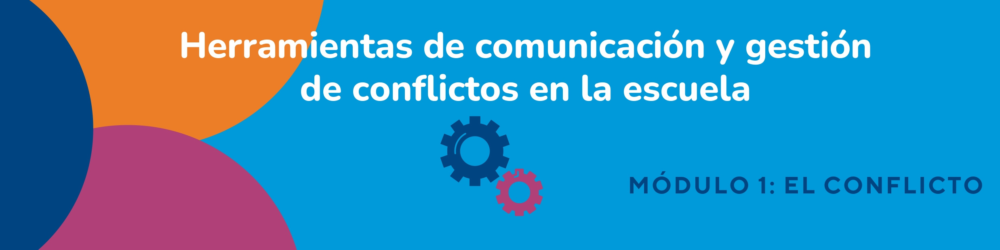
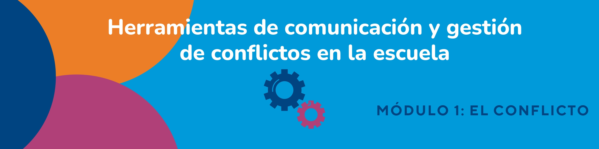
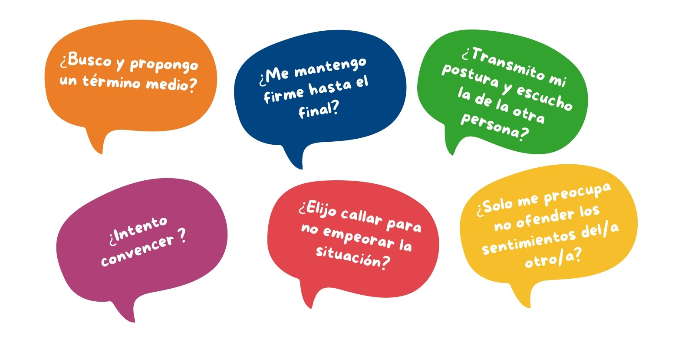

Inicio


En nuestra vida cotidiana enfrentamos una multiplicidad de situaciones que suelen ser vividas como “conflictivas”. Nos movemos e interactuamos en diferentes ámbitos -familiares, laborales, comerciales, etc.- donde están presentes y condicionan nuestra convivencia.Â
Teniendo en cuenta que el conflicto atraviesa la condición humana y es inherente a ella, es que en todos los lugares donde nos desarrollamos se pueden producir hechos disruptivos que nos afectan. AsÃ, en las escuelas, como instituciones sociales de transmisión y recreación de la cultura, existe una constante interacción entre las personas (estudiantes, familias, docentes, no docentes y agentes de la comunidad) que puede dar lugar a situaciones problemáticas diversas.Â
La normativa vigente nos ayuda y obliga. Sin embargo, muchas veces, para lograr climas armónicos necesitamos trabajar y hacer práctica consciente de herramientas, recursos y estrategias de comunicación que nos permitan desarrollar habilidades para gestionar y resolver conflictos. Tal como lo establece el Programa Nacional de Mediación, se trata de construir habilidades sociales para la vida que requieren un aprendizaje y desarrollo por parte de los diferentes actores institucionales.
En este recorrido, dividido en tres módulos, comenzaremos abordando al conflicto como mecanismo inevitable en los vÃnculos interpersonales que se presenta en nuestra vida diaria y laboral. Desarrollaremos sus diferentes perspectivas, formas de abordaje y su enfoque como oportunidad.Â
A continuación, en esta lÃnea, nos adentraremos en la comunicación como un proceso dinámico que posibilita el entendimiento entre las personas y la convivencia pacÃfica en las instituciones, para finalizar con el análisis de las principales técnicas y estrategias de comunicación y gestión de conflictos en las escuelas.Â
Les damos la bienvenida e invitamos a comenzar este recorrido.
Como bien expresa el autor Nató, a la idea de conflicto siempre se le atribuye un sentido negativo, asociándolo con enfrentamientos, crisis o contingencias. En efecto, en la RAE es definido como “combate, lucha, pelea”, “problema o materia de discusión”.

Sin embargo, además de ser inevitable y caracterizarse por ser ubicuo y universal (Alzate), para diferentes autoras/es, el conflicto no es negativo, anormal o disfuncional. Tampoco reúne connotaciones positivas. Sino que simplemente “es”, al concebirse como:
🔶Un hecho real que acontece y debe ser abordado🔶
Tomando a la psicóloga Marines Suares, el conflicto es una “interacción incompatible o marcada por la disconformidad entre las partes (dos o más) donde los antagonismos que se anidan en las situaciones conflictivas son favorables ya que, al abordarlos, impulsa la evolución humana”.
En toda escuela, estas situaciones conflictivas mencionadas por la autora, poseen distinto alcance pudiendo repercutir en los equipos directivos, cuerpo docente, estudiantes, madres, padres o tutores y comunidad escolar en general, dando lugar a la necesidad de un tratamiento adecuado.
En este aspecto, es importante tener en cuenta que:
🔷Ante un conflicto, tendremos diferentes formas de abordarlo🔷
En este marco, hablamos de conflictos interpersonales por ser éstos los más experimentados y vivenciados en nuestras relaciones laborales, en especial, en las instituciones educativas.
Pero, ¿a qué nos referimos con "conflicto interpersonal"? ¿Existen más tipos de conflicto?Â
Veamos:
Situaciones problemáticas producidas entre dos o más personas que se vinculan dentro de relaciones personales, laborales, profesionales, familiares o comerciales.

Son aquellos que se desarrollan en el interior de cada persona y están relacionados con sus pensamientos, impulsos, valores, emociones e ideas.
Producidos entre dos o más grupos. Por ejemplo, patronal - sindicato.
 Â Â Â Â Â
     
Conflictos acaecidos dentro de un grupo reducido de personas que afectan la capacidad para resolver y alcanzar objetivos. A modo de ejemplo, se producen dentro de una familia o equipo de trabajo.
Actividad comunicativa entre dos o más personas.
En el ámbito educativo, las relaciones interpersonales suceden de manera constante dando lugar a diferentes conflictos que se caracterizan por ser cambiantes y dinámicos. Existe una necesaria tarea vincular y presencial, la mayor parte del tiempo, que hace de los conflictos un desafÃo a diario.
Entre sus funciones, un conflicto:
▶️Evita los estancamientos.
▶️Habilita la posibilidad de conocernos a uno/a mismo/a y a los/as demás.
▶️Potencia la creatividad de las personas implicadas.
▶️Favorece el establecimiento de lÃmites y normas grupales.
▶️Promueve la incorporación de estrategias de resolución.
▶️Posibilita el cambio social e individual.
▶️Nos conecta con una oportunidad.
Posibilidad que existe de realizar una acción para conseguir o alcanzar alguna mejora.
Siendo que los conflictos, en nuestra vida y experiencias, muchas veces nos han conducido a situaciones destructivas, peleas o malestares, ¿cómo podrÃan considerarse una oportunidad?Â
 Instagram: SubsecretarÃa de Fortalecimiento Institucional (@sficordoba)
Instagram: SubsecretarÃa de Fortalecimiento Institucional (@sficordoba)
En este sentido y previamente, será importante detenernos a observar cómo solemos reaccionar y actuar ante una situación conflictiva. Para ello, siguiendo a Alzate, existen 4 fases en el ciclo de todo conflicto que demuestran nuestro comportamiento habitual:
Nuestras actitudes y creencias
¿Cómo nos paramos ante un conflicto? ¿Nos predisponemos de alguna manera?
El ciclo comienza con nuestras propias creencias y actitudes frente a cada situación problemática que se nos presenta.Â
El conflicto
La segunda fase ocurre con el acaecimiento mismo del conflicto.
La respuesta
¿Qué reacción solemos tener ante un conflicto? ¿Qué hacemos habitualmente?
Es en esta fase donde iniciamos un accionar que se ajustará a un mapa de creencias predeterminado y variará según cada persona. De ahà que existan diferentes formas a la hora de abordar una situación, tales como: hablar, callar, gritar, bromear o tomar una conducta evitativa, entre otras.Â
El resultado
En este punto, tenemos la tendencia a reforzar nuestro sistema de creencias (fase #1) y a repetir patrones de conducta utilizados con anterioridad y frecuencia.Â
En Educación se busca dar respuesta a los conflictos desde un posicionamiento construido colectivamente que tenga como premisa fundamental el diálogo, la participación, la capacidad de reconocer a las otras personas junto a sus necesidades, y la adquisición de habilidades para construir colaborativamente formas alternativas de resolución.Â
Asimismo, y de acuerdo a lo establecido por la GuÃa Federal de Orientaciones para la intervención educativa, el conflicto es una oportunidad para el crecimiento y el desarrollo de las personas involucradas, en lo que se refiere a dos dimensiones que se consideran fundamentales para la vida en sociedad: la revalorización propia y el reconocimiento del/a otro/a.
Teniendo en cuenta que todas las personas tenemos una manera predominante a la hora de afrontar una situación conflictiva, la cual determinará un resultado posible, a continuación detallamos los cinco estilos de abordaje.Â
Veamos a cuál nos acercamos más👇🏻
Buscamos satisfacer nuestros propios intereses por encima de los intereses de la otra parte. Abordar el conflicto nos significa ganar o perder dado que tenemos la razón y la otra persona no.Â
Presentamos una actitud apática, de indiferencia o negación ante una situación problemática. Abandonamos el asunto ya sea por falta de interés o costes muy altos.
Nos ajustamos a la postura de la otra persona para mantener la relación o hacerla sentir bien. Pasamos a estar de acuerdo con todo, aún, sacrificando nuestro interés o resultado.
Nos esforzamos por llegar a un punto medio teniendo en cuenta los intereses de ambas partes.
Buscamos obtener el mejor resultado posible, manteniendo el vÃnculo con la otra parte y satisfaciendo los intereses de todas las personas involucradas.
Luego de analizar cada estilo, compartimos algunas preguntas reflexivas que nos ayudarán a conocer y determinar nuestra postura frecuente ante un conflicto para poder rever los resultados obtenidos.

De esta manera, volviendo al interrogante de considerar al conflicto como una oportunidad, diremos que sà lo es porque luego de asumir su condición de inevitable, podremos pararnos desde otra perspectiva y elegir qué actitud emplear ante su acaecimiento.Â
Esta actitud y forma que utilicemos para su abordaje, podrá llevarnos a un proceso de aprendizaje, cambio y mejora en nuestra comunicación e interacción social. Â
De manera complementaria, podremos enriquecernos con el uso de estrategias y herramientas que nos permitan potenciar habilidades para la gestión y resolución pacÃfica que analizaremos en los próximos módulos📚
Obra publicada con Licencia Creative Commons Reconocimiento Compartir igual 4.0